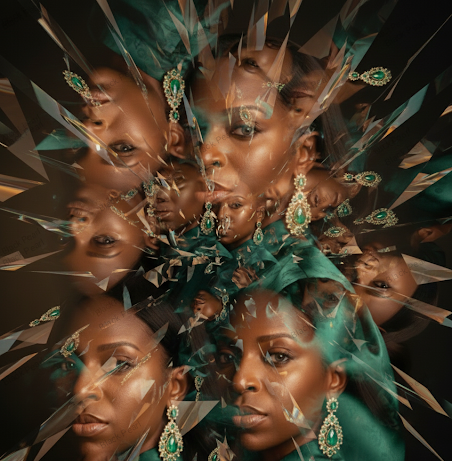
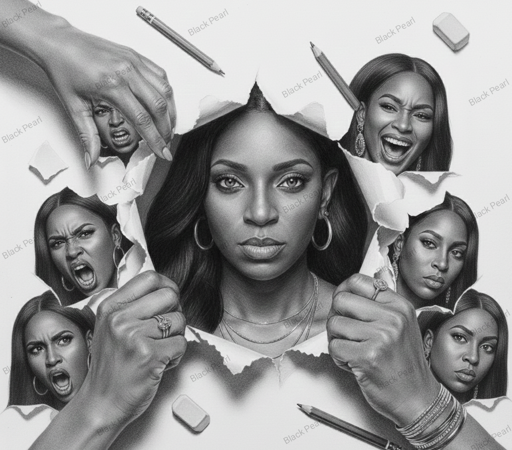

COLLECTION III
Burdens
Gallery Room II
The final works reveal the strength that emerges after fracture, endurance, and healing.

Fractured considers the moments when life breaks apart unexpectedly. Rather than portraying brokenness as failure, the work reflects on the resilience that begins to emerge when fractured lives slowly rebuild themselves into something stronger.
Collection: Burdens
Status: Available
$100
Tenacity concludes the exhibition with quiet determination. It honours the extraordinary resilience that enables people to continue despite grief, disappointment, uncertainty, and pain. Hope is presented not as certainty, but as the courage to keep moving forward.
Collection: Burdens
Status: Available
$60

"The heaviest burdens are often the ones no one else can see."
Burdens reminds us that every person carries unseen stories. The exhibition honours grief, resilience, healing, and the quiet courage required to continue when life becomes difficult.